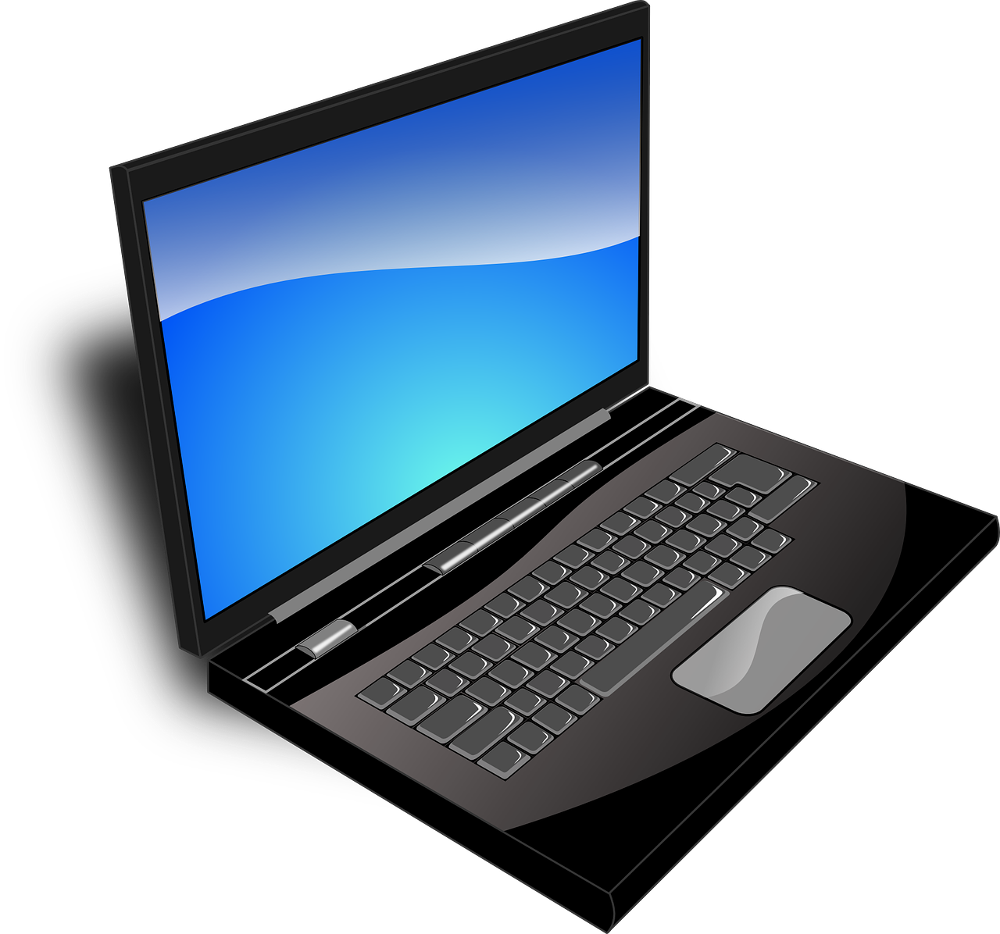

Introdução
Com o avanço da era digital, o conhecimento sobre computadores tornou-se indispensável em praticamente todas as áreas da vida, seja no trabalho, nos estudos ou até mesmo para lazer. Desde a comunicação até o armazenamento de dados e o acesso à informação, os computadores desempenham um papel central. Essas ferramentas, cada vez mais integradas ao nosso cotidiano, são essenciais para realizarmos tarefas de forma mais rápida, eficiente e conectada. Este guia tem como objetivo apresentar os conceitos básicos de computação, ajudando você a se familiarizar com essa tecnologia.
O que é um computador?
Um computador é uma máquina eletrônica capaz de receber, processar e armazenar dados. Ele realiza essas funções através de um conjunto de componentes físicos, chamados de Hardware, e programas, conhecidos como software.
- Hardware: Refere-se à parte física do computador, ou seja, as peças que o compõem, como o processador, a memória, o disco rígido, o monitor e o teclado.
- Software: São os programas e sistemas que o computador utiliza para realizar suas funções, como sistemas operacionais (Windows, Linux, etc.), navegadores de internet, editores de texto e jogos.
Os computadores podem variar em tamanho e poder de processamento, indo desde grandes servidores até pequenos dispositivos móveis como smartphones e tablets. Eles são fundamentais em inúmeras áreas da vida moderna, como comunicação, educação, trabalho e entretenimento.
Os tipos mais comuns de computadores:
- Desktops (Computadores de Mesa): São muito comuns em residências e escritórios, mas não são fáceis de transportar devido ao seu tamanho e à necessidade de estarem constantemente conectados à energia elétrica.
- Notebooks (Laptops): São computadores de fácil transporte, pois o teclado, a tela e os demais componentes estão integrados em uma única peça, permitindo trabalhar ou estudar em qualquer lugar.
- Smartphones: Aparelhos celulares com funções de telefone e computador, muito populares para tarefas diárias rápidas e comunicação. Além disso, são mais acessíveis e fáceis de usar.
- Tablets: Dispositivos móveis com tela sensível ao toque, representando uma opção intermediária entre smartphones e notebooks.




Esse guia terá como foco computadores desktop e laptops